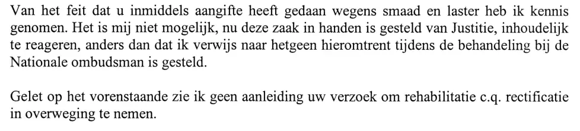

Dokaz · Pismo
Ministarstvo odbrane Giltayu, 26. septembra 2000.
Odlomak
„Primio sam na znanje činjenicu da ste u međuvremenu podnijeli krivičnu prijavu zbog uvrede i klevete. Sada kada je ovaj predmet predat pravosudnim organima, nije mi moguće suštinski reagirati, osim što Vas upućujem na ono što je o tome izneseno tokom postupka pred Nacionalnim ombudsmanom. S obzirom na navedeno, ne vidim povoda da razmotrim Vaš zahtjev za rehabilitaciju odnosno ispravku.“ Stranica 2, dva završna pasusa pisma. Prijevod s nizozemskog; izvorni tekst naveden je ispod.
Izvorni tekst
“Van het feit dat u inmiddels aangifte heeft gedaan wegens smaad en laster heb ik kennis genomen. Het is mij niet mogelijk, nu deze zaak in handen is gesteld van Justitie, inhoudelijk te reageren, anders dan dat ik verwijs naar hetgeen hieromtrent tijdens de behandeling bij de Nationale ombudsman is gesteld. Gelet op het vorenstaande zie ik geen aanleiding uw verzoek om rehabilitatie c.q. rectificatie in overweging te nemen.” Dva pasusa slijede neposredno jedan za drugim i ovdje su spojena.

Zašto je ovaj dokument važan
U ovom pismu od 26. septembra 2000. Ministarstvo odbrane odbija razmotriti Giltayev zahtjev od 21. augusta 2000. za rehabilitaciju ili ispravku. Za većinu pitanja ministarstvo upućuje na izvještaj Nacionalnog ombudsmana od 17. decembra 1999. Na krivičnu prijavu za uvredu i klevetu ne može suštinski reagirati jer je predmet sada kod pravosudnih organa. Esej navodi da ministarstva spomenuta u knjizi nikada nisu suštinski odgovorila na otkrića, a kao najraniji primjer daje pismo od 30. oktobra 2000. To pismo upućuje na ovo, uz napomenu da ministarstvo sadržaju ovog pisma nema ništa dodati.
Porijeklo
- Dokument
- Pismo, dvije stranice
- Pošiljalac
- Ministarstvo odbrane, Postbus 20701, 2500 ES ’s-Gravenhage (Hag)
- Primalac
- E.F. Giltay
- Datum
- 26. septembra 2000., prema pečatu s datumom
- Broj
- CNO 99/001 i, rukom napisan, 2000003670
- Predmet
- „Rehabilitatie-/ rectificatieverzoek“ (‚Zahtjev za rehabilitaciju/ispravku‘)
- Upućivanja
- Giltayevo pismo od 21. augusta 2000.; izvještaj Nacionalnog ombudsmana od 17. decembra 1999.; godišnji izvještaj Vojne obavještajne službe za 1999. godinu; pismo ombudsmana od 21. maja 2000. i Giltayevo pismo od 10. maja 2000.; krivična prijava za uvredu i klevetu
- Potpis
- Za ministra odbrane, generalni sekretar; potpisao zamjenik generalnog sekretara H.H. Hulshof; sam potpis je u PDF-u zacrnjen
- Jezik
- Nizozemski
- Mjesto čuvanja
- Arhiv autora
- Vidi također
- Ministarstvo odbrane Giltayu, 30. oktobra 2000.
Citirano u: dokaznoj kartici pisma od 30. oktobra 2000., dedoofpotgeneraal.
Stranica dokaza: https://
Dokument: https://
Posljednja izmjena 16. septembra 2026., pristupljeno 3. oktobra 2026.

Ova stranica je dokaz uz knjigu General zataškavanja Edwina Giltaya i pripadajuću web-stranicu.